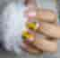

Bienvenidos a nuestra página
Misión: Nuestra misión es ofrecer servicios de manicura, el servicio de uñas press- on y uñas acrilicas, ademas de pedicura de alta calidad, utilizando productos seguros y sostenibles, para realzar la belleza y el bienestar de nuestros clientes. Nos comprometemos a brindar una experiencia única y personalizada en un ambiente acogedor y profesional, donde cada cliente se sienta valorado y satisfecho.
Visión: Nuestra visión es ser reconocidos como líderes en la industria de la belleza de uñas, innovando constantemente en técnicas y productos, y promoviendo la salud y el cuidado de las uñas. Aspiramos a crear una comunidad de amantes de la belleza que se sientan inspirados y empoderados a través de nuestros servicios, contribuyendo al bienestar y la autoestima de cada persona que nos visita.
Unas Acrilicas y Press-on

Materiales:Tips para uñas, Deshidratador para uña natural, Nivelador de ph, Acrlico en polvo, Monomero, Toallitas para limpiar, Top coat, Sanitizante, Aceite para cuticula, Geles semipermanentes, Recina, Limas 150, 80 80 y Sponch
Instrumentos a utilizar: Godete,
Empujador de cuticula,
Tijera para cortar cuticula,
Pincel original de cerdas Kolinsky,
Pincel 3D,
Pincel mano alzada
Lampara led,
Drill
Elaboración: Nuestras uñas se hacen con productos de calidad, para el cuidado y bienestar de las uñas naturales, tratando que sean libres de quimicos.
Uso: Ideal para traer unas uñas limpias y bellas.